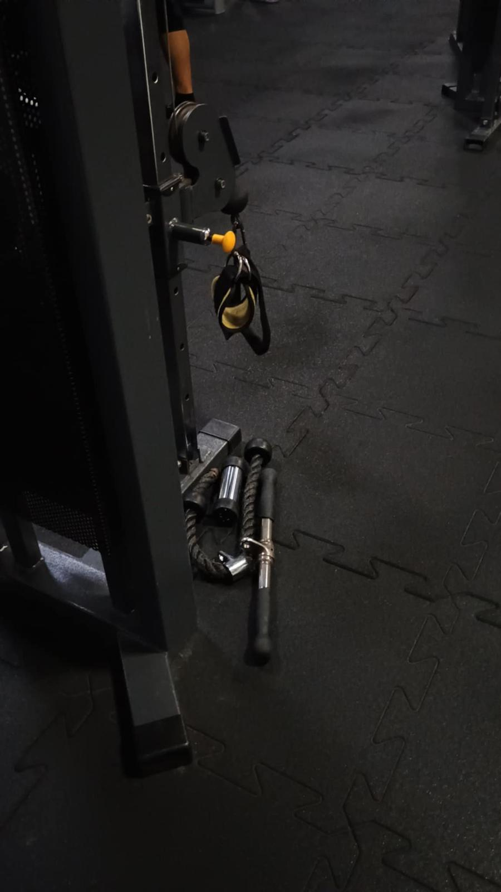

Chodzenie na siłownię może być jednym z wielu sposobów na spędzanie wolnego czasu. Dla niektórych to po prostu forma aktywności fizycznej, która pomaga utrzymać dobrą kondycję i zdrowie. Można tam poćwiczyć, poruszać się po całym dniu siedzenia, albo po prostu oderwać się na chwilę od codziennych obowiązków.
Na siłowni da się robić różne rzeczy – od biegania na bieżni, przez ćwiczenia siłowe, aż po zajęcia grupowe. Każdy może znaleźć coś, co mu odpowiada. Nie trzeba od razu być ekspertem ani mieć super formy – dużo osób zaczyna od zera.
Po pewnym czasie można zauważyć różnice – trochę więcej siły, lepsze samopoczucie, może trochę inna sylwetka. To wszystko może być miłym dodatkiem.
Dla mnie siłownia to po prostu miejsce, gdzie można się poruszać i zrobić coś dla siebie. Nie jest to może moja największa pasja, ale lubię mieć takie zajęcie w tygodniu. Lepiej to niż siedzenie cały czas przy komputerze.

Powrót do strony głównej...